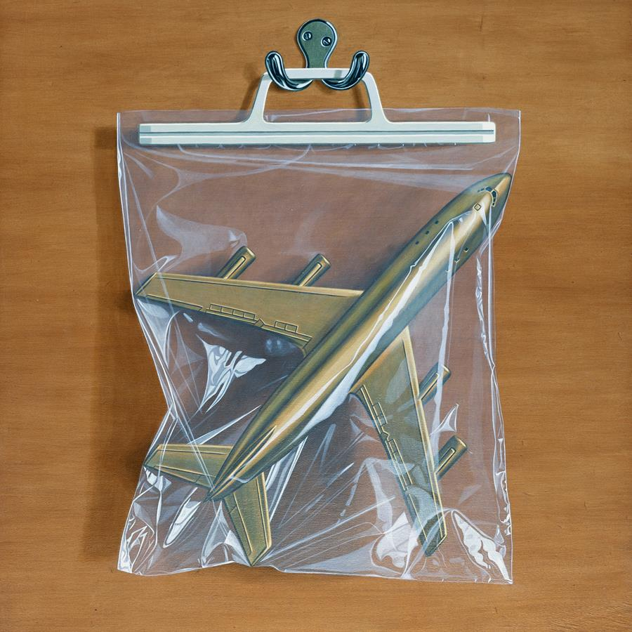
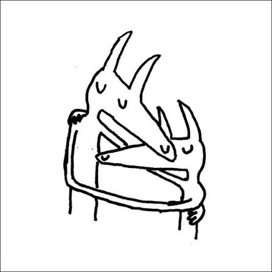

PERDIDO
PERDIDO
Imaginal Disk - Magdalena Bay
Lugar: Los Ángeles, California, EE. UU.
Fecha: 23/08/2024
Álbum de synth-pop futurista y pop psicodélico grabado en formato físico de disco acrílico y vinilo.
Plataforma para la localización y reporte de objetos extraviados
PERDIDO
Lugar: Los Ángeles, California, EE. UU.
Fecha: 23/08/2024
Álbum de synth-pop futurista y pop psicodélico grabado en formato físico de disco acrílico y vinilo.

ENCONTRADOLugar: Cambridge, Reino Unido
Fecha: 04/02/2022
Disco de post-rock e indie orquestal en estuche con ilustración de un avión envuelto en plástico.
Lugar: Londres, Reino Unido
Fecha: 04/04/2025
Álbum de rock experimental y pop barroco editado por Ninja Tune con arreglos acústicos y violines.

ENCONTRADOLugar: Seattle, Washington, EE. UU.
Fecha: 16/02/2018
Álbum de indie rock conceptual con la clásica portada en trazo simple de dos figuras abrazadas.
Completa la información requerida para agregar la publicación al registro.